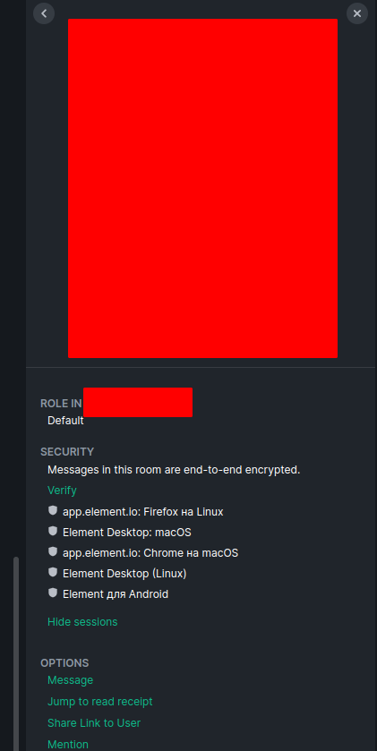
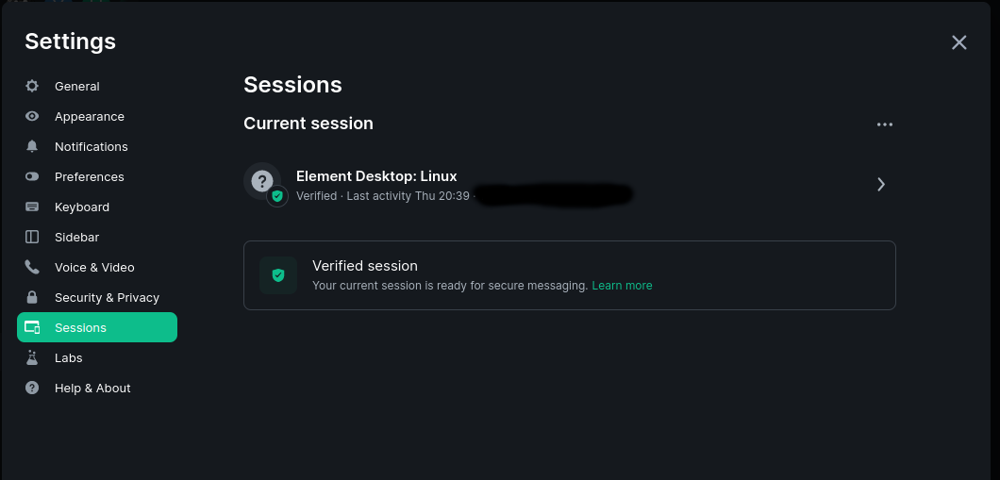

Советы по мессенджеру Element
Отдельные страницы с инструкциями:
- Регистрация в Element.io
- Запуск нескольких профилей в Element (и хранение профиля в криптоконтейнере).
Документация, инструкции:
- Документация к Matrix на примере Elementopen in new window
- Русскоязычное сообщество протокола Матрикс (Matrix)open in new window
- Курс по Element на Matrixopen in new window
- Matrix at Darmstadt University of Applied Sciencesopen in new window
Оглавление
1. Просмотр устройств пользователя
В профиле пользователя видны устройства с которых есть сессии пользователя. Таким способом можно определить кто из участников пользуется Windows или смартфоном.

2. Список сессий
Удаляйте неиспользуемые сессии через вкладку Sessions в настройках Element.

3. Массовое сообщение в комнатах
В комнате можно отметить определенного человека если отметить его ник начиная с символа @, например, @petrov.
Участник комнаты с ролью администратор (и, возможно, с ролью модератор) может отправлять массовые сообщения с помощью ключевого слова @room.
4. Подключение через прокси
Можно запустить Element так, чтобы трафик проходил через Tor или другой транспорт. Для этого используется консольный параметр
--proxy-server=address:port
Описание параметра находится на странице документации Electronopen in new window.
Список остальных консольных параметров можно посмотреть командой
/opt/Element/element-desktop --help